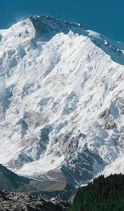

Самые высокие горы мира
Список самых высоких гор мира


 Джомолунгма, Китай
Джомолунгма, Китай
Восхождение на Джомолунгму — сложное и опасное мероприятие, требующее серьёзной физической и психологической подготовки, а также надлежащего снаряжения и опытных
гидов. Несмотря на смертельный риск, тысячи людей ежегодно пытаются достичь вершины. Экстремальная высота горы и суровые условия привели к многочисленным
смертельным случаям, в том числе от лавин, падений, высотной болезни и других опасностей. Впервые Джомолунгма покорилась сэру Эдмунду Хиллари из Новой
Зеландии и непальскому шерпу Тенцингу Норгею 29 мая 1953 года.
Джомолунгма расположена в Евразии, в горной системе Гималаи (образовавшейся в результате столкновения Индостанской и Евразийской тектонических плит),
в части Кхумбу-Гимал хребта Махалангур-Химал. Средняя высота хребтов в этой местности составляет около шести километров.
Десять из 14 восьмитысячников мира (высота которых превышает восемь тысяч метров над уровнем моря) находятся в Гималаях.
 Макалу, Китай
Макалу, Китай
Макалу представляет из себя отдельную вершину, расположенную в 14 милях восточнее Эвереста.
Грандиозная уже только своим размером, гора имеет к тому же правильную пирамидальную форму, что усиливает впечатление.
Гора очень непростая, ведь только пять из первых шестнадцати восхождений были успешными. Макалу была описана и изучалась эверестовскими экспедициями,
но до первовосхождения на Эверест попыток взойти на эту гору не предпринималось (до 1954 года)
У горы есть второстепенная вершина, Чомо Лонжо (25,650 футов), к Северу от главной вершины, от которой отделена узкой перемычкой.
 Нанга-Парбат, Пакистан